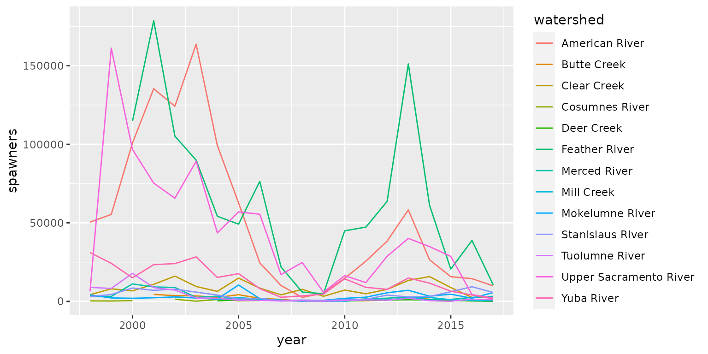
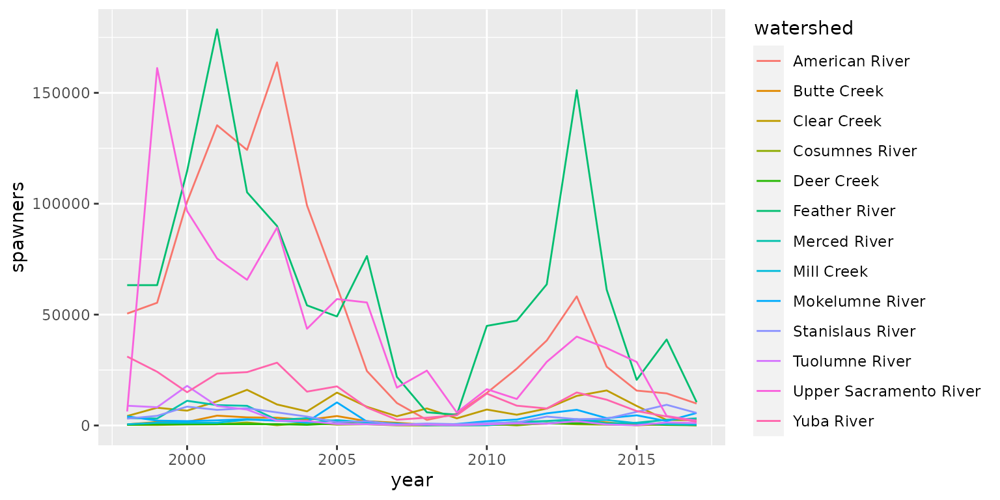

calibration-2021.RmdWe are using genetic algorithms, a type of stochastic optimization, to calibrate the following model coefficients:
..surv_adult_enroute_int used in submodel surv_adult_enroute
..surv_adult_prespawn_int used in submodel surv_adult_prespawn
..surv_egg_to_fry_int used in submodel surv_egg_to_fry
..surv_juv_rear_int used in submodel surv_juv_rear
..surv_juv_rear_contact_points used in submodel surv_juv_rear
..surv_juv_rear_prop_diversions used in submodel surv_juv_rear
..surv_juv_rear_total_diversions used in submodel surv_juv_rear
..surv_juv_bypass_int used in submodel surv_juv_bypass
..surv_juv_delta_int used in submodel surv_juv_delta
..surv_juv_delta_contact_points used in submodel surv_juv_delta
..surv_juv_delta_total_diverted used in submodel surv_juv_delta
..surv_juv_outmigration_sj_int used in submodel surv_juv_outmigration_san_joaquin
..ocean_entry_success_int used in submodel ocean_entry_success
A detailed description for each of these parameters can be found in the Fall Run Documentation Website
We are restricting the calibration to watersheds with Grandtab data, these are:
| watershed | |
|---|---|
| 1 | Upper Sacramento River |
| 6 | Butte Creek |
| 7 | Clear Creek |
| 10 | Deer Creek |
| 12 | Mill Creek |
| 19 | Feather River |
| 20 | Yuba River |
| 23 | American River |
| 26 | Cosumnes River |
| 27 | Mokelumne River |
| 28 | Merced River |
| 29 | Stanislaus River |
| 30 | Tuolumne River |
We are using the GA R package to implement our genetic algorithms search to calibrate the above intercepts for the fallRunDSM::fall_run_model() function of the fallRunDSM R package.
Additionally, we are using DSMCalibrationData to access calibration related data.
We will be minimizing the error between GrandTab estimated escapement data for the years 1998-2017 to natural spawners predicted by the DSM. We are further scaling this error by a weight representing the amount of observed data available for a given watershed. Given that GrandTab includes both hatchery and natural spawners, we will scale GrandTab escapement values using the predicted proportion natural spawners for a given year generated by the model. This will allow us to compare predicted natural spawners to psuedo GrandTab natural spawners.
For calibration, we have prepared the GrandTab data in two ways:
DSMCalibrationData::grandtab_observed - This data will be used in the fitness function to measure the difference between model predictions and observed escapement. Missing values are NA and we made all records less than 100 NA to account for a lack of confidence for counts less than 100.
DSMCalibrationData::grandtab_imputed - This data will be used to calculate the number of juveniles during the 20 year simulation. The GrandTab data is incomplete for many watersheds during the 20 year period of calibration. For watersheds with no GrandTab data, we used 40 as the default escapement value. For watersheds with incomplete data, we used the mean escapement value.
Observed Values

Imputed Values 
The data inputs to the DSM are for years 1980-1999. We selected proxy years for 1998-2017 from the 1980-1999 model inputs by comparing the DWR water year indices in this analysis.
These inputs are generated by calling DSMCalibrationData::set_synth_years(params), with a params object from the life cycle model ex: fallRunDSM::params. See the documentation for more details on the DSMCalibrationData R package.
We are minimizing the sum of squared errors of simulated natural adults and grandtab adults scaled using simulated proportion natural, normalized by mean escapement. The purpose of normalizing is to prevent watersheds with large escapement values from dominating the calibration. In addition to normalizing we are adding weights to each error term corresponding to the amount data available at that watershed. Doing so will penalize watersheds with more data whose error term is large, but be less aggressive with watersheds with less data.
All intercepts and watersheds that need calibration are described in the Objective section of this document.
Note, ..surv_adult_enroute_int and ..ocean_entry_success_int are vectors and expanded within the fitness function arguments.
# Fitness Function ------------------
fall_run_fitness <- function(
known_adults,
seeds,
params,
surv_adult_enroute,
surv_adult_prespawn,
surv_egg_to_fry,
bypass_surv_juv,
upsac_surv_juv,
butte_surv_juv,
clear_surv_juv,
deer_surv_juv,
mill_surv_juv,
sac_surv_juv,
feather_and_bear_surv_juv,
yuba_surv_juv,
american_surv_juv,
deltatribs_surv_juv,
moke_surv_juv,
merced_surv_juv,
stan_surv_juv,
tuol_surv_juv,
sj_surv_juv,
surv_juv_rear_contact_points,
surv_juv_rear_prop_diversions,
surv_juv_rear_total_diversions,
surv_juv_bypass_int,
surv_juv_delta_int,
surv_juv_delta_contact_points,
surv_juv_delta_total_diverted,
surv_juv_outmigration_sj_int,
default_ocean_entry_surv,
upsac_ocean_entry_surv,
butte_ocean_entry_surv,
deer_ocean_entry_surv,
mill_ocean_entry_surv,
midsactribs_ocean_entry_surv,
yuba_ocean_entry_surv,
american_ocean_entry_surv,
deltatribs_ocean_entry_surv,
moke_ocean_entry_surv,
merced_ocean_entry_surv,
stan_ocean_entry_surv,
tuol_ocean_entry_surv) {
params_init <- params
params_init$..surv_adult_enroute_int = surv_adult_enroute
params_init$..surv_adult_prespawn_int = surv_adult_prespawn
params_init$..surv_egg_to_fry_int = surv_egg_to_fry
params_init$..surv_juv_rear_int = c(`Upper Sacramento River` = upsac_surv_juv,
`Antelope Creek` = deer_surv_juv,
`Battle Creek` = deer_surv_juv,
`Bear Creek` = deer_surv_juv,
`Big Chico Creek` = deer_surv_juv,
`Butte Creek` = butte_surv_juv,
`Clear Creek` = clear_surv_juv,
`Cottonwood Creek` = deer_surv_juv,
`Cow Creek` = deer_surv_juv,
`Deer Creek` = deer_surv_juv,
`Elder Creek` = deer_surv_juv,
`Mill Creek` = mill_surv_juv,
`Paynes Creek` = deer_surv_juv,
`Stony Creek` = deer_surv_juv,
`Thomes Creek` = deer_surv_juv,
`Upper-mid Sacramento River` = sac_surv_juv,
`Sutter Bypass` = bypass_surv_juv,
`Bear River` = feather_and_bear_surv_juv,
`Feather River` = feather_and_bear_surv_juv,
`Yuba River` = yuba_surv_juv,
`Lower-mid Sacramento River` = sac_surv_juv,
`Yolo Bypass` = bypass_surv_juv,
`American River` = american_surv_juv,
`Lower Sacramento River` = sac_surv_juv,
`Calaveras River` = deltatribs_surv_juv,
`Cosumnes River` = deltatribs_surv_juv,
`Mokelumne River` = moke_surv_juv,
`Merced River` = merced_surv_juv,
`Stanislaus River` = stan_surv_juv,
`Tuolumne River` = tuol_surv_juv,
`San Joaquin River` = sj_surv_juv)
params_init$..surv_juv_rear_contact_points = surv_juv_rear_contact_points
params_init$..surv_juv_rear_prop_diversions = surv_juv_rear_prop_diversions
params_init$..surv_juv_rear_total_diversions = surv_juv_rear_total_diversions
params_init$..surv_juv_bypass_int = surv_juv_bypass_int
params_init$..surv_juv_delta_int = surv_juv_delta_int
params_init$..surv_juv_delta_contact_points = surv_juv_delta_contact_points
params_init$..surv_juv_delta_total_diverted = surv_juv_delta_total_diverted
params_init$..surv_juv_outmigration_sj_int = surv_juv_outmigration_sj_int
params_init$..ocean_entry_success_int = c(
`Upper Sacramento River` = upsac_ocean_entry_surv,
`Antelope Creek` = default_ocean_entry_surv,
`Battle Creek` = default_ocean_entry_surv,
`Bear Creek` = default_ocean_entry_surv,
`Big Chico Creek` = default_ocean_entry_surv,
`Butte Creek` = butte_ocean_entry_surv,
`Clear Creek` = default_ocean_entry_surv,
`Cottonwood Creek` = default_ocean_entry_surv,
`Cow Creek` = default_ocean_entry_surv,
`Deer Creek` = deer_ocean_entry_surv,
`Elder Creek` = default_ocean_entry_surv,
`Mill Creek` = mill_ocean_entry_surv,
`Paynes Creek` = default_ocean_entry_surv,
`Stony Creek` = default_ocean_entry_surv,
`Thomes Creek` = default_ocean_entry_surv,
`Upper-mid Sacramento River` = default_ocean_entry_surv,
`Sutter Bypass` = default_ocean_entry_surv,
`Bear River` = midsactribs_ocean_entry_surv,
`Feather River` = midsactribs_ocean_entry_surv,
`Yuba River` = yuba_ocean_entry_surv,
`Lower-mid Sacramento River` = default_ocean_entry_surv,
`Yolo Bypass` = default_ocean_entry_surv,
`American River` = american_ocean_entry_surv,
`Lower Sacramento River` = default_ocean_entry_surv,
`Calaveras River` = deltatribs_ocean_entry_surv,
`Cosumnes River` = deltatribs_ocean_entry_surv,
`Mokelumne River` = moke_ocean_entry_surv,
`Merced River` = merced_ocean_entry_surv,
`Stanislaus River` = stan_ocean_entry_surv,
`Tuolumne River` = tuol_ocean_entry_surv,
`San Joaquin River` = default_ocean_entry_surv)
keep <- c(1,6,7,10,12,19,20,23,26:30)
num_obs <- rowSums(!is.na(known_adults[keep, 6:20]))
total_obs <- sum(!is.na(known_adults[keep, 6:20]))
weights <- num_obs / total_obs
tryCatch({
preds <- fall_run_model(mode = "calibrate",
seeds = seeds,
stochastic = FALSE,
..params = params_init)
known_nats <- known_adults[keep, 6:20] * (1 - params_init$proportion_hatchery[keep])
mean_escapent <-rowMeans(known_nats, na.rm = TRUE)
sse <- sum(((preds[keep,] - known_nats)^2 * weights)/mean_escapent, na.rm = TRUE)
return(sse)
},
error = function(e) return(1e12),
warning = function(w) return(1e12)
)
}
library(GA)
res <- ga(type = "real-valued",
fitness =
function(x) -fall_run_fitness(
known_adults = known_adults,
seeds = calibration_seeds,
params = params,
x[1], x[2], x[3], x[4], x[5], x[6], x[7], x[8], x[9], x[10],
x[11], x[12], x[13], x[14], x[15], x[16], x[17], x[18], x[19],
x[20], x[21], x[22], x[23], x[24], x[25], x[26], x[27], x[28],
x[29], x[30], x[31], x[32], x[33], x[34], x[35], x[36], x[37],
x[38], x[39], x[40]
),
lower = c(2.5, rep(-3.5, 39)),
upper = rep(3.5, 40),
popSize = 150,
maxiter = 10000,
run = 50,
parallel = TRUE,
pmutation = .4)The ga function allows for several paramaters to be set before calibrating a model. Here we list the reasoning for the values passed into the ga functon above.
lower - sets the lower bound possible for each of the parameters we are trying to calibrate. All parameters used in the model exist within a inverse logit function therefore limiting the genetic algorithms space of search greatly improves its speed. We also explicitly limit ..surv_adult_enroute as a positive value to keep the GA from quickly converging to a state where all fish are dead.
upper - sets the upper bound possible for each of the parameters we are trying to calibrate. The same reasoning as lower, but we add no special limitiation to ..surv_adult_enroute
popSize - sets population size for each iteration of the GA. We found 150 to be a good balance between breadth and speed of the search.
maxiter - sets the number of iterations the GA will run for. We set this value large enough so that the run argument would be determining factor as to when the GA stopped.
run - we set this value to 50 as it allowed the algorithm to avoid local minimum but also complete the calibration within 3-4 hours.
pmutation - set the probability of mutation, we used this value to explore the solution space more aggresively once we had a starting position from a previous run.
The algorithm is always run in parallel.
The results for calibration are below:
Spawning Adults
..surv_adult_enroute_int = 3.3660081..surv_adult_prespawn_int = -1.061446Egg to Fry
..surv_egg_to_fry_int = 3.4048167Rearing Survival Intercepts
Note: Deer Creek survival intercept was used for all Upper Sacramento Tributaries not listed below
Intercepts listed below are supplied into the model as a vector ..surv_juv_int
..surv_juv_rear_contact_points = 0.3317422..surv_juv_rear_prop_diversions = -2.5818296..surv_juv_rear_total_diversions = -3.1670594Migration Intercepts
..surv_juv_bypass_int = -2.2108365..surv_juv_delta_int = -2.0264052..surv_juv_delta_contact_points = -1.4272058..surv_juv_delta_total_diverted = 1.0292423..surv_juv_outmigration_sj_int = -0.4343738Ocean Entry Success
Intercepts listed below are supplied into the model as a vector ..ocean_entry_success_int
Default Ocean Entry is used for all watersheds not listed above